１ 【経営方針、経営環境及び対処すべき課題等】
本項においては、将来に関する事項が含まれていますが、当該事項は2026年３月31日現在において判断したものです。
当社および連結子会社（以下、トヨタという。）は経営の基本方針を「トヨタ基本理念」として掲げており、その実現に向けた努力が、企業価値の増大につながるものと考えています。その内容は次のとおりです。
１. 内外の法およびその精神を遵守し、オープンでフェアな企業活動を通じて、国際社会から信頼される企業市民をめざす
２. 各国、各地域の文化、慣習を尊重し、地域に根ざした企業活動を通じて、経済・社会の発展に貢献する
３. クリーンで安全な商品の提供を使命とし、あらゆる企業活動を通じて、住みよい地球と豊かな社会づくりに取り組む
４. 様々な分野での最先端技術の研究と開発に努め、世界中のお客様のご要望にお応えする魅力あふれる商品・サービスを提供する
５. 労使相互信頼・責任を基本に、個人の創造力とチームワークの強みを最大限に高める企業風土をつくる
６. グローバルで革新的な経営により、社会との調和ある成長をめざす
７. 開かれた取引関係を基本に、互いに研究と創造に努め、長期安定的な成長と共存共栄を実現する
トヨタはモビリティカンパニーへの変革を進めるために、改めて歩んできた道を振り返り、未来への道標となる「トヨタフィロソフィー」をまとめました。
トヨタはモビリティカンパニーとして移動にまつわる課題に取り組むことで、人や企業、コミュニティの可能性を広げ、「幸せを量産」することを使命としています。そのために、モノづくりへの徹底したこだわりに加えて、人と社会に対するイマジネーションを大切にし、様々なパートナーと共に、唯一無二の価値を生み出していきます。
「トヨタフィロソフィー」
グループビジョン「次の道を発明しよう」
グループビジョンは、トヨタグループ＊の目指すべき方向、トヨタグループ全員が立ち戻ることができるビジョン・価値観です。
「次の道を発明しよう」。
グループの創始者・豊田佐吉は「苦労する母親を少しでも楽にしたい」という想いで、「豊田式木製人力織機」を発明しました。そして、豊田喜一郎は「日本人の頭と腕で自動車工業を興さねばならない」との想いで「国産乗用車」を発明しました。誰かを想い、学び、技を磨き、ものをつくり、人を笑顔にする。発明への情熱と姿勢こそ、トヨタグループの原点です。
正解のない時代に、互いに「ありがとう」と言い合える風土を築き、多様な人財が活躍し、未来に必要とされるトヨタグループを目指していきます 。
＊ ㈱豊田自動織機、トヨタ自動車㈱、愛知製鋼㈱、㈱ジェイテクト、トヨタ車体㈱、豊田通商㈱、㈱アイシン、㈱デンソー、トヨタ紡織㈱、トヨタ不動産㈱、㈱豊田中央研究所、トヨタ自動車東日本㈱、豊田合成㈱、ダイハツ工業㈱、トヨタホーム㈱、トヨタ自動車九州㈱、ウーブン・バイ・トヨタ㈱の17社（2026年４月１日時点）
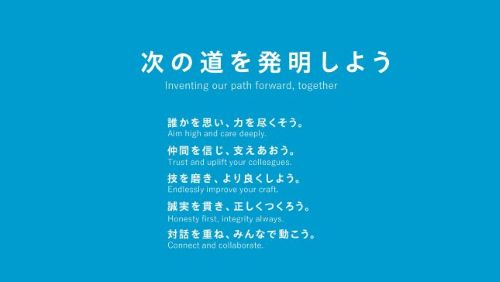
「商品軸」「地域軸」経営
当社は、「もっといいクルマづくり」を掲げ、Toyota New Global Architecture（TNGA）によるラインアップの群戦略などといった「商品を軸とした経営」と、お客様・地域社会に信頼される「その町いちばんのクルマ屋」を目指す「地域軸経営」により、強固な収益基盤を着実に築いてきました。
一つひとつの商品は、一朝一夕に生まれるものではありません。多くの仲間が、長い間積み上げてきたものであり、開発・生産・仕入先・販売店、そしてお客様や市場など、多くの関係者によって育てていただいたものだと考えています。地域の皆様との信頼関係も同様です。
さらに、2025年10月に開催されたジャパンモビリティショーにおいて、「トヨタ」「レクサス」「ダイハツ」「GR」に加え、新たに「センチュリー」ブランドを提案しました。
なかでも、「センチュリー」は、「ジャパン・プライドを世界へ発信するブランド」を目指しています。その名には「次の100年をつくる」という想いが込められており、日本発の新たな価値創造を通じて、当社は、持続可能で平和な社会の実現に貢献していきたいと考えています。
また、TOYOTAブランドについては、「TO YOU」という言葉に当社の想いを載せました。当社が発表したIMV Originは、あえて未完成の状態で工場から出荷することで、地域の中に「組み立てる」という新しい仕事を生み、さらには、暮らしや仕事の多様な用途に応じて自由にカスタマイズすることで、その地域にとって最適な一台を生み出していくことを目指しています。
当社グループの各ブランドが、これまで以上に明確な役割を担い、互いに補完し合うことで、お一人おひとりに応える多様な商品を通じ、お客様の選択肢をさらに広げていきます。
継続的な損益分岐台数の改善
当社は、2024年および2025年において、認証問題や余力不足と正面から向き合い、足場固めに取り組んできました。その結果、安全・品質が徹底され、余力創出が進み、生産も安定しました。一方で、人への投資や未来への投資の拡大に加え、米国関税の影響も重なり、足元では、損益分岐台数が大きく上昇しています。
この課題に対応すべく、全社一丸となった取り組みを開始しました。すべての地域・本部・カンパニーで、固定費の見直しや、原価改善・営業面の努力などによる収益の積み増しを進めるとともに、従業員一人ひとりが仕事のやり方を見直し、ムダのない正味作業を追求することで、生産性を一層向上させていきます。例えば、定型作業や付加価値が低い業務には、これまで以上にAIを積極活用し、人にしかできない仕事に集中することで、正味率を向上させます。このように、足場固めの成果を「稼ぐ力」に着実につなげ、損益分岐台数の改善に徹底的にこだわっていきます。環境が悪いときにも収益を上げ、ステークホルダーの皆様とともに成長への取り組みをサステナブルに継続できることが、当社に求められる経営体質だと考えています。
加えて、モビリティカンパニーへの変革に向けて、重要な役割を果たすのがバリューチェーン事業です。この事業は、新車販売後の長い保有期間を通じて、お客様に継続的な価値を提供するビジネスであり、これまで着実に成長してきました。これは、商品軸・地域軸経営によって築かれた強いブランドに支えられた多様な商品が、世界中で1.5億台の保有につながったことに加え、修理のしやすさや補給部品の供給力も含めた商品力、高水準の残価をサービス・金融・中古車販売・保険などの現場が、1台1台の価値を最大限に活かそうと努力してきた結果です。今後は、新車とバリューチェーン事業の好循環に加え、ソフトウエアや多様なモビリティ・サービスを通じた新たな価値創造を推進し、収益基盤の一層の強化を図っていきます。
また、生産現場をはじめとする各職場では、多くの課題に向き合いながらも、「もっといいクルマ」を目指して日々、改善に取り組んでいます。その努力を結果に結びつけるべく、経営陣と現場が一体となり、各職場の力を最大限に発揮できる環境づくりに取り組んでいきます。
モビリティカンパニーへの変革
当社は、すべての人に「移動の自由」を届ける企業への変革を目指し、事業活動を推進しています。将来にわたり、クルマが世の中の役に立ち、お客様を笑顔にするモビリティであり続けるためには、交通事故や環境負荷等の課題を低減するとともに、利便性や快適性、運転の楽しさといった価値を高めていくことが必要です。クルマを真ん中に置いて、データやエネルギーの可動性を高め、社会システムとの融合を視野に入れ、新しい移動価値の創造と新しい産業構造をつくっていくことに挑戦していきます。
［交通事故ゼロ社会への貢献：SDV（Software Defined Vehicle）］
モビリティカンパニーへの変革のリード役となるのがSDVです。当社がSDVに取り組む一番の目的は交通事故ゼロ社会の実現であり、SDVを通じて、より安全・安心で、楽しい移動を実現します。交通事故ゼロ社会の実現はクルマの技術革新だけでは難しく「クルマ」「ヒト」「インフラ」の三位一体での取り組みが不可欠です。例えば、クルマだけの進化では補えない死角からの飛び出しに、路上インフラのセンサー情報を活用するインフラとの協調や、ドライバー（ヒト）の運転を自律的にサポートしてくれるAIエージェントなどです。
クルマが社会とつながるためには、切れ目のない通信環境やデータセンターなどの整備が重要であり、その基盤構築を進めています。
当社は「安全・安心を一丁目一番地」としながら、お客様とともに育つAIエージェント、プロフェッショナルや若かりし頃の運転を再現するクルマなど、データとAIが生み出すSDVの多様な価値を保有1.5億台の強みを活かし、具体化させていきます。ソフトウエア開発の土台となる電子プラットフォームの刷新や、モデルチェンジ後のＲＡＶ４に搭載されたソフトウエアづくりプラットフォーム「Arene」を通じて、安全・安心かつ高品質なソフトウエアを継続的にお客様に提供していきます。
引き続き、産業を超えたパートナーとも力を合わせて、当社らしいSDVの基盤整備を加速していきます。
［Toyota Woven City］
当社は、モビリティカンパニーへの変革を掲げ、その変革に向けて、新たなプロダクトやサービスを生み出していく「モビリティのテストコース」として、Toyota Woven City（トヨタ・ウーブン・シティ）を位置づけています。当社グループの一社であるウーブン・バイ・トヨタが、当社とともにプロジェクトを進めており、2025年９月にオフィシャルローンチを迎えました。企業・個人が様々なプロダクトやサービスの実証を開始するとともに、一部住民が居住を開始しています。
当社のモノづくりの知見やウーブン・バイ・トヨタのソフトウエア技術、そしてそれぞれのInventor（発明家）が持つ様々な強みや専門性といった、自分たちが持っていないものを掛け合わせることで、今は存在しない価値をつくり出していきます。それが、私たちが目指す「カケザン」による発明です。
さらに、この「カケザン」による発明を加速させる施設として、2026年４月より「Woven City Inventor Garage」（以下、Inventor Garage）の稼働を開始しました。Inventor Garageは長年にわたり、乗用車を生産してきたトヨタ自動車東日本㈱の東富士工場プレス建屋をリノベーションして誕生した施設です。東富士工場が培ってきたモノづくりの魂を受け継ぎ、未来のイノベーションへとつなげる、Toyota Woven Cityの象徴でもあります。Inventor Garageでは、発明品のプロトタイプを製作するモノづくりスペースや、実証スペースが備えられており、プロダクトやサービスの開発拠点となることが期待されています。
Toyota Woven Cityは、ヒト・モビリティ技術・インフラが互いに連携するしくみなどの実証を行い、安全・安心な「モビリティ社会」の実現を目指します。想いをともにする人々と、Toyota Woven Cityからモビリティカンパニーへの変革を目指し、未来を紡いでいきます。
ステークホルダーとの関係強化・文化
当社の持続的な企業価値向上のためには、株主・投資家の皆様をはじめ、お客様、地域社会、販売店、仕入先など多様なステークホルダーとの信頼関係を一層強化させていくことが重要な課題であると認識しています。
［TOYOTA WORLD ARIGATO FEST. 2025］
2025年12月、当社グループを支える地域社会、各地域の販売店、取引先、投資家の皆様をご招待し、日頃の感謝を伝える場としてTOYOTA WORLD ARIGATO FEST. 2025を開催しました。当イベントでは、トヨタが今後投入を予定している新型車をご覧いただいたほか、開発中の様々なモビリティを体感していただきました。
今回のイベントで相互に交わされた「ARIGATO」から、当社は、ステークホルダーの皆様と築いてきた信頼の大切さを改めて実感しました。「ARIGATO」と言い合える関係を、世代を超えて受け継ぎ、その絆をさらに深めていきます。
［TOYOTA ARENA TOKYO］
2025年10月にTOYOTA ARENA TOKYOがオープンしました。男子プロバスケットボールリーグ Bリーグ「アルバルク東京」のホームアリーナとして使用するほか、様々なスポーツ観戦やエンターテインメント興行に対応可能な多目的アリーナです。コンセプトは「可能性にかけていこう」です。スポーツや音楽で頑張る人たち、特に若い方たちが可能性に挑戦する場所として、活用してもらいたいと考えています。
TOYOTA ARENA TOKYOがバスケットボールをはじめとするスポーツやエンターテインメントを愛する人にとっての憧れの場に。そしてファンの皆様、ここに住む人、働く人、訪れる人、一人ひとりと一緒になって、365日の賑わいをつくっていくとともに、スポーツの、モビリティの、この街の、あらゆる可能性を解き放つ場所になっていくことを目指します。
当社のサステナビリティに関する考え方及び取組は、次のとおりであります。
なお、文中の将来に関する事項は、当連結会計年度末現在において当社が判断したものであります。
トヨタグループの原点である「豊田綱領」に「上下一致、至誠業務に服し、産業報国の実を挙ぐべし」とあるように、「世のため人のためになる仕事をすること」「クルマづくりを通じて人々の幸せや社会の発展に貢献すること」こそ、当社が大切にすべき価値観や行動規範であると考えています。
その原点に立ち返って、2020年に取りまとめた「トヨタフィロソフィー」において、当社は、トヨタの使命を「幸せの量産」と定めました。お客様をはじめとする世界中のステークホルダーの幸せに貢献するために、社会と企業の持続的な発展をめざす。これは言い換えれば、「サステナビリティ経営」を実践していくことに他なりません。
「豊田綱領」と「トヨタフィロソフィー」を軸にした経営を通して、「もっといいクルマをつくろうよ」「町いちばんの会社を目指そう」「自分以外の誰かのために行動しよう」という価値観、「トヨタらしさ」が浸透し、商品・事業の土台が築かれてきました。
これから当社がやるべきことは、この土台の上で、「幸せの量産」という使命を果たすために、さらなる成長戦略・サステナビリティ経営のあり方を描き、その道筋を具体化していくことであると考えています。
トヨタがめざしているのは、誰ひとり取り残さず、すべての人に「移動の自由」をお届けするモビリティカンパニーへの変革です。このビジョンを具現化する上での重要課題（マテリアリティ）を、お客様、地域社会・取引先、従業員というステークホルダーの視点を踏まえて、「移動価値の拡張」「安全・安心」「人類と地球の共生」「くらしと雇用を守る」「全員活躍」「強固な経営基盤」という6つにまとめています。
そして、その中心にあるクルマづくりに対する想いを「クルマの未来を変えていこう」という言葉に込めました。
将来にわたって、クルマが世の中の役に立ち、お客様を笑顔にするモビリティであり続けるためには、交通事故や環境負荷の増大、渋滞など、クルマが生み出すネガティブなインパクトを最小化し、同時に、利便性や快適性、運転の楽しさなど、クルマの感性価値を高め、ポジティブなインパクトを最大化していくことが必要であると考えています。
当社にとって、「モビリティカンパニーに変革する」ということの意味は、クルマの進化を通じて、「モビリティ社会」をつくるお役に立ち、新しい産業構造をつくっていくことであると考えています。そのリード役を務める使命感をもって、多くの仲間とともに行動してまいります。
正解が分からない今のような時代こそ、「意志ある行動」を積み重ねていくことが重要であると思います。豊田佐吉翁が大切にしていた「百折不撓」の精神を胸に、信念をもって、クルマの未来を変えていくために挑戦し続けてまいります。
＜トヨタのマテリアリティ（重要課題）＞
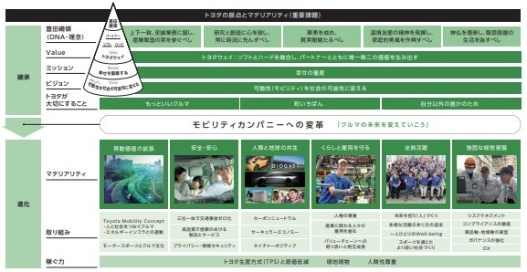
（２）ガバナンス
当社では、外部環境変化・社会からの要請などを把握し、より重要性・緊急性が高い課題に優先的に取り組むために、取締役会の監督・意思決定のもと、次のような推進体制にて関係部署と密に連携しながら、環境・社会・ガバナンスなどのサステナビリティ活動を継続的に推進・改善しています。
経営に関わる横断的なサステナビリティの重要課題を審議するため、社長が議長を務め、主に環境、社会課題に関するテーマを扱うサステナビリティ会議と、Chief Risk Officerが議長を務め、ガバナンスに関するテーマを扱うガバナンス・リスク・コンプライアンス会議を設置しています。その他、より実務に近い個別の課題・テーマは、関係部門の責任者が出席するミーティング・CN戦略分科会で審議する体制を構築しています。
＜サステナビリティ推進体制＞
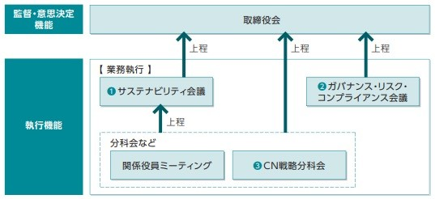
CCO：Chief Compliance Officer, CRO：Chief Risk Officer
当社は、カーボンニュートラル、移動価値の拡張（電動化・知能化・多様化など）をはじめとする自動車産業を取り巻く状況や価値観の大変革時代において、常に新たな挑戦が求められるなか、不確実性への対応としてリスクマネジメントをより一層強化してまいります。
各地域、機能、カンパニーが相互に連携・サポートし、グローバル視点で事業活動において発生するリスクを予防・緩和・軽減し、適切に管理するために、リスクマネジメントの責任者としてChief Risk Officer（CRO）、Deputy CRO（DCRO）および、各地域にリスクマネジメント統括を配し、以下の推進体制を構築しています。
なお、リスクマネジメントシステムの仕組みとして、ISOやCOSO（Committee for Sponsoring Organizations of the Treadway Commission）等を参考にして構築される全社的リスク管理フレームワーク、Toyota Global Risk Management Standard（TGRS）に基づき、定期的なリスクの識別・評価・集約・対策導入・モニタリングを実施しています。
また、識別されたリスクのうち、当社にとって重大と判断されたリスクについては、CROを議長とした「ガバナンス・リスク・コンプライアンス会議」にて審議し、取締役会等へ適切に付議し、事業の推進を図っています。
＜推進体制＞
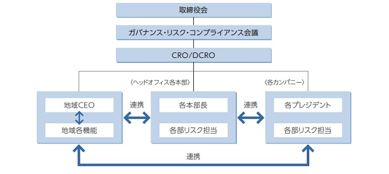
当社は、「モノづくりは人づくり」の理念のもと、最大の財産は「人」であるとして、創業当初より人材育成に取り組んできました。人材育成の共通基盤は、トヨタの「思想（トヨタフィロソフィー）」「技（トヨタ生産方式：TPS）」「所作（トヨタウェイ2020）」です。「自分以外の誰かのために」という「思想」のもと、徹底的にムダを無くし、リードタイムを短くするTPSという「技」を身につけ、自らの行動、すなわち「所作」によって、「思想」を実現する人材を育成します。こうした人材が、現場で自律的に考え、行動することは、環境変化への対応力を高めるものと考えています。
①ガバナンス
当社は、人的資本に関する課題を的確に捉えるため、従業員との対話を重視しています。特に、労使協議会・労使懇談会には、サステナビリティ会議の出席メンバーでもある社長・副社長らが参加し、従業員の声や人的資本に関する課題の把握と解決の方向性を見出す機会としています。
把握された課題のうち、特に重要なものや、機能横断的に対応するテーマは、「第２ 事業の状況 ２ サステナビリティに関する考え方及び取組（２）ガバナンス」に記載のサステナビリティ会議に上程し、重要事項の審議・決定および人的資本に関する「サステナビリティ重点取り組みテーマ」の推進につなげています。
＜参考＞ 2025年度 開催実績
・サステナビリティ会議：４回
・労使協議会：４回
・労使懇談会：２回
②戦略
当社は、モビリティカンパニーへの変革を進める上で、お客様、地域社会・取引先、従業員というステークホルダーの視点を踏まえ、マテリアリティ（重要課題）を６つにまとめました。そのうち、「全員活躍」、「くらしと雇用を守る」において、人的資本に関わる６つの重点実施項目を特定しました。
これらの重点実施項目に対する取り組みを進めることが、未来を担う人材の育成において重要と考えています。
③リスク管理
当社では、従業員との対話、エンゲージメントサーベイ、相談窓口などの複数のコミュニケーション手段を通じて、逐次職場の現状把握を進めることに加え、各種法改正や外部環境の変化を踏まえた情報収集やベンチマークを通じて、人的資本に関するリスクの把握を行っています。
これらを通じて識別されたリスクのうち、全社的な観点から重要と判断されるものについては、「第２ 事業の状況 ２ サステナビリティに関する考え方及び取組（３）リスク管理」に記載のプロセスに基づき、経営層での意思決定や取り組みの検討につなげています。
④指標と目標
重点取り組みテーマの「ダイバーシティ人材の活躍推進」に関連し、当社単体における代表的な指標と、その目標・当事業年度実績は下表のとおりです。
また現在、人的資本におけるマテリアリティに関する指標を連結子会社から収集し、実態把握を進めています。
トヨタは、カーボンニュートラル（CN）実現に貢献することを通じて、人と自然が共生する持続的な社会の構築を目指しています。「トヨタ地球環境憲章」、「トヨタ環境チャレンジ2050」の理念の下、気候変動関連のインパクト・リスク・機会の対応に取り組むとともに、クルマのライフサイクル全体で2050年CNを実現するため、全力で取り組んでいます。「誰ひとり取り残さない」「すべての人に移動の自由をお届けしたい」との思いから、マルチパスウェイ戦略を軸に、多様な選択肢で温室効果ガス排出量を着実に削減していきます。
①ガバナンス
気候変動関連課題の取締役会による監督
トヨタは、取締役会を気候変動関連課題（リスク・機会を含む）に対応する監督・意思決定機関と位置付けています。社会動向に応じた戦略を効果的に立案・実行するため、気候変動関連の重要な事案が生じた場合、取締役会に上程しています。
気候変動関連課題への対応（年一回以上のリスク・機会の評価・管理を含む）はCN戦略分科会などを中心に実施し、取締役会が監督しています。また、サステナビリティおよび気候変動関連課題間でのトレードオフも含め、各会議体で審議された結果を踏まえて、取締役会が意思決定を行なっています。気候変動関連の目標の策定・進捗確認・見直しについては、取締役会の監督の下、製品環境委員会・連結環境委員会での審議を経て、CN戦略分科会にて審議・承認しています。会議体の詳細については、「第２ 事業の状況 ２ サステナビリティに関する考え方及び取組（２）ガバナンス」を参照ください。
2025年における取締役会での意思決定の事例としては、中国のカーボンニュートラル実現への貢献に向け、上海市との包括的提携契約の締結や、BEVや電池の開発・生産会社であるレクサス（上海）新エネルギー有限会社の設立の承認が挙げられます。当該会社ではレクサスブランドのBEVを開発し、2027年以降に生産開始を予定しています。
②戦略
a.トヨタの戦略（マルチパスウェイ戦略の基本的な考え方）
クルマが社会で必要な存在であり続けるための喫緊の課題がカーボンニュートラル（CN）です。トヨタの活動の軸は、モノづくりやサプライチェーンの脱炭素化を進めながら、モビリティにおいて 「マルチパスウェイ」戦略の下、世界中のお客様に選択肢を提供していくことです。エネルギーの未来に寄り添ったモビリティのあり方を考えていくことを大切にしています。その為には、地球環境やサステナビリティの観点で、化石燃料への依存を減らしていく必要があります。その上で、中長期的には、再生可能エネルギー等の普及が進み、「電気」と「水素」が社会を支える有力なエネルギーになっていくと考えられます。一方で、短期的には、世界各地の現実に向き合い、エネルギーセキュリティを担保しながら、プラクティカルに変化を進めていくことが重要です。だからこそ私たちは、電気と水素の未来を見据えながら、多様なエネルギー事情やお客様ニーズに寄り添ったモビリティの選択肢を提供していきます。プラクティカルなトランジションを軸に、CNの実現をめざしていくことが、マルチパスウェイ戦略の根底にある考え方です。
b.気候変動関連のインパクト・リスク・機会の特定および評価
インパクト・リスク・機会の概要
トヨタは特定されたインパクト、リスク、機会（IRO）を起点として、将来に影響を与える可能性のある要因を把握し、トヨタの戦略、移行計画のもとで適切に対応しています。気候変動関連のIROの概要は以下のとおりです。
・インパクト：企業の活動または取引関係の結果として、企業が環境および社会に与える影響
・リスク
移行リスク：気候変動政策の導入・強化や低炭素技術の進展など、低炭素社会への移行が企業に与えるネガティブな影響
物理的リスク：気候変動により生じる物理的気候事象が企業に与えるネガティブな影響
・機会：低炭素社会への移行や気候変動の進展により生じる、市場変化への対応や技術革新などが、企業に与えるポジティブな影響
気候変動関連のリスク・機会については、シナリオ分析を用いた特定・評価プロセスを構築しています。IROの重要性の解像度を上げるため、財務影響評価もプロセスに含めて実施しています。IROを評価する際の時間軸は以下のとおりに分類しています。
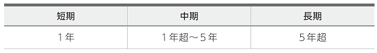
気候変動関連のインパクトの特定および評価するプロセス
トヨタは、トヨタおよびバリューチェーンにおける活動を分析し、環境および社会に与えうるインパクトを特定し、それらのインパクトについて、深刻度（影響の規模および範囲）と発生可能性の二つの軸で評価を実施しています。トヨタの温室効果ガス（GHG）排出量は、Scope３（Scope１および２以外の間接排出）、特にカテゴリー11（製品の使用による排出）が多くの割合を占めており、気候変動への影響が大きく、バリューチェーン全体での削減の取り組みが重要と考えています。一方、Scope１（事業者自らによる温室効果ガスの直接排出）および２（他社から供給された電気、熱・蒸気の使用に伴う間接排出）は排出量割合こそ小さいものの、自社での直接管理が可能な範囲であり、ライフサイクルCO2ゼロチャレンジを掲げるトヨタにとって重要だと考えています。
気候変動関連のリスクと機会の特定および評価するプロセス
気候変動に関する社内専門チームと社外専門家により、多様な将来の社会像を想定したシナリオ分析を行い、気候変動関連のリスクと機会を特定・評価するとともに、戦略のレジリエンスを評価しています。
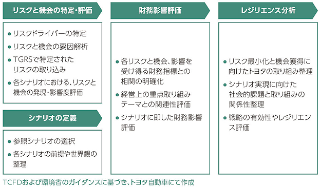
リスクと機会の特定・評価
将来の社会像を想定した気候変動関連のリスクと機会の主要な変動要因（リスクドライバー）を、移行リスク（政策・法規制／市場／技術／評判）、物理的リスク（急性／慢性）のそれぞれの観点で特定しています。リスクと機会に至るまでの要因解析を実施することによる、リスクと機会の洗い出しを行い、要因解析により特定したリスクと機会に、ISSB*が公表する「産業別ガイダンス」において定義されている開示トピックのほか、外部情報を参照し特定した気候変動関連のリスク・機会項目、および全社横断的リスク管理の仕組みである、TGRSで特定された気候変動関連のリスクを取り込んでいます。また、特定したリスクドライバーを前提とした各シナリオにおいて、リスクと機会の発生可能性と影響度がどのように変化するかを検証し、各リスク・機会の重要性については、発生可能性・影響度の定量的評価に加え、企業の社会的責任やトヨタの重要課題との関連等を考慮した定性的評価をもとに総合的に判断しています。
* International Sustainability Standards Board：国際サステナビリティ基準審議会
シナリオ分析の概要
シナリオ分析は、TCFDや環境省のガイダンスにおいて示されるプロセスに基づき実施し、移行リスク・機会を評価する1.5℃シナリオ分析、および気候ハザードに基づく物理的リスクを評価する４℃シナリオ分析を実施しています。
・分析対象
移行リスク・機会：トヨタおよび連結会社における自動車事業とサプライチェーン
物理的リスク：トヨタおよび連結子会社、連結子会社以外の車両生産会社
・影響評価の対象期間
移行リスク・機会：～2035年
物理的リスク：～21世紀後半
1.5℃シナリオ分析
シナリオ選定
トヨタは、参照シナリオとして、IEA*1、IPCC*2、AR6*3WG3報告書などの複数の公表シナリオを選択しています。社会を支えるエネルギーは再生可能エネルギーの普及に伴い、電気と水素に収れんしていくと考察する一方、足元では各国・各地域でさまざまなエネルギー事情に応じて、トランジションの進度が異なることを認識しています。
近年の世界情勢からも、環境問題と経済安全保障との両立が議論され始め、国際的なインフレによる再生可能エネルギー投資の鈍化や、欧米などでのBEVの販売増加傾向の停滞といった事象も見受けられます。また、気候変動枠組条約締約国会議（COP）をはじめとする国際的な議論の場においても、将来に至るまでの過渡期の対応について議論が進んでおり、各国・各地域の事情に応じ、多様な脱炭素手段導入の重要性について認識が広がっています。
上記の背景認識の下、中長期的には電気と水素が社会を支える有力なエネルギーになっていく未来を見据えながら、短期的には各国・各地域のエネルギー事情と、多様なお客様のニーズに寄り添ったモビリティの選択肢を提供し、プラクティカルにトランジションを進めていくことが、トヨタのマルチパスウェイ戦略の考え方です。
1.5℃シナリオにおける分析では、乗用車について、BEV・PHEVの導入を主要な施策として脱炭素策を論じたIEA のNZEシナリオ*4に加え、地域性や緩和策の多様化（炭素除去（CDR＊5）、炭素回収・貯留技術（CCS*6）、カーボンニュートラル（CN）燃料など）を反映したその他の1.5℃シナリオも考慮し、戦略のレジリエンスを評価しています。
各シナリオの前提・世界観については、以下のように整理しています。
IEA NZEシナリオ（IEA『World Energy Outlook 2025』）では、グローバルに電化と再生可能エネルギーが拡大し、発電部門からのGHG排出量削減により、他部門からの排出量も削減されます。運輸部門では、比較的電化が容易な道路輸送分野においてBEVが普及することにより、GHG排出量が削減されますが、実際には、各国・各地域のエネルギー事情と政策展開により、これら施策の取り組み進度、時間軸には遅れが生じることもあり、その場合はCDR技術が必要としています。
その他の1.5℃シナリオでは、エネルギー・経済安全保障や産業力低下の懸念などにより、各国・各地域のエネルギー事情と政策展開による緩和策進展の遅れが世界全体に及び、脱炭素技術の市場導入には初期段階に多大な投資が必要であり、投資状況により進展に差が生じ得るとしています。また、低排出電力による電化以外の脱炭素化技術も活用しつつ、道路輸送分野のバイオ燃料利用については、食料競合や自然環境保護のための土地利用制約による供給量の差異など、導入量拡大には制約も生じ得ると同時に、燃料価格の上昇を伴うとしています。より遅いGHG排出削減から、気温上昇のオーバーシュートが生じざるを得ず、NZEシナリオより大規模・大量のCDR技術を、後々導入することが前提となります。
＊1 International Energy Agency：国際エネルギー機関
＊2 Intergovernmental Panel on Climate Change：気候変動に関する政府間パネル
＊3 6th Assessment Report：第6次評価報告書
＊4 Net Zero Emissions by 2050 Scenario
＊5 Carbon Dioxide Removal
＊6 Carbon Capture and Storage
IEA NZEシナリオの検討
IEAは、NZEシナリオ実現には、再生可能エネルギーの積極的な導入による電力の脱炭素化と乗用車のBEV化の進行などにより、2030年以降に急速にGHG排出量を削減し、2050年には保有車も含めてネットゼロを達成することが必要だと報告しています。その実現においては、各国政府が、カーボンプライシング／燃費規制の厳格化／内燃機関車の販売禁止など、野心的な気候政策を実施すると同時に、BEVを普及させるためのインセンティブ策を拡大することが前提となります。政策と消費者の環境意識の向上による市場のBEV受容とともに、技術面で、車両電動化、革新的な電池開発、再生可能エネルギー電力を活用したエネルギーマネジメントシステムなどの進展、社会全体で電化と再生可能エネルギーへの転換、エネルギー効率の改善によるエネルギー消費量の抑制が必要としています。また、電化が困難な分野で残る化石燃料、電化と再生可能エネルギーへの転換遅れには、CDR技術による大気からの炭素除去が必須としています。2023年版以前のIEA World Energy Outlookでは、NZEシナリオにおいて、CDR技術の活用は想定されていませんでしたが、2024年版では活用が必須となり、2025年版ではより多くの活用が必須と報告しています。本シナリオにおける移行リスクや実現に向けた社会的課題は以下だと考えています。
本シナリオにおける移行リスク
・燃費・GHG・ZEV規制不適合による罰金など
・規制対応に伴う急な商品変更による減産や販売台数の低下
・パワートレーン技術開発にともなう研究開発費用の増加
・BEV関連の原材料需要増加にともなう供給不足と調達コストの増加
・再生可能エネルギー電力価格の高騰による製造コストの増加
本シナリオの実現に向けた社会的課題
・再生可能エネルギー導入を促進する政策と投資の実行
・電池材料確保のための社会システム構築とリサイクル技術開発
・電気や水素利用の脱炭素技術革新と低コスト化
・電動車普及にともなう充電インフラの整備
・脱炭素技術やCDR技術導入にともなう費用負担増加
その他の1.5℃シナリオの検討
IEAのNZEシナリオに加え、各国・各地域のエネルギー事情と政策展開の差異を詳細に分析するため、IPCCや各研究機関が公表している複数の1.5 ℃シナリオ群を比較検討しています。パリ協定1.5℃実現に向けた道筋は以下の通りです。
・エネルギー部門：
再生可能エネルギー利用のほか、CCSなどの多様な技術を導入。バイオ燃料や合成燃料などの低炭素燃料・CN燃料を導入
・運輸部門：
車両の電動化のほか、省燃費車の活用やバイオ燃料・合成燃料などの低炭素燃料・CN燃料に対応
・各国・各地域の差異：
各国・各地域の事情に応じて、バイオマスなどの再生可能エネルギーをそれぞれ最大限に活用、過渡期には炭素回収・利用・貯留技術（CCUS*）と組み合わせた化石燃料利用も行うことで、経済発展とCNの両立を目指す。低炭素燃料・CN燃料などの多様なエネルギーインフラ整備が進むことにより、それぞれの利便性にも基づいて、多様なエネルギーとパワートレーンを選択
*Carbon Capture, Utilization and Storage
本シナリオ群における移行リスク
・BEV推進に関わる移行リスクはIEAのNZEシナリオと同様だが、現時点での各国・各地域のBEV導入の実績、施策の見直しを踏まえると、トヨタの戦略・財務への影響は比較的小さい
・バイオ燃料や合成燃料などの低炭素燃料・CN燃料の普及遅れ
・自動車燃料多様化にともなう研究開発費用の増加
・電力以外にも、ガス燃料や液体燃料などエネルギーの低炭素化にともなうエネルギー調達コストの増加
本シナリオ群の実現に向けた社会的課題（IEAのNZEシナリオより多様化）
・水素／バイオ／合成燃料など各国・各地域に適合した低炭素燃料・CN燃料の技術開発と普及初期段階での導入支援
・バイオ燃料に関わる食料競合などの問題解決と燃料価格の上昇抑制
・他部門との連携による低炭素燃料・CN燃料の供給確保
・安定したエネルギー供給に向けたインフラ整備や政策支援など
1.5℃シナリオにおけるリスクと機会のトレードオフ
電動化による売り上げ変動にかかる機会が考えられる一方で、研究開発費用の増加や原材料調達コストの増加などのリスクがトレードオフとして発生します。
４℃シナリオ分析
シナリオ選定
４℃シナリオ分析における参照シナリオとして、IPCC AR6 WG1 SSP5-8.5を選択しています。IPCC SSP5-8.5は、化石燃料依存型の経済発展の下、気候政策が導入されない最大排出量シナリオであり、物理的気候事象が極端に頻発化・激甚化するシナリオです。本シナリオの下で分析を行うことで、事業活動のレジリエンスを評価しています。
４℃シナリオの検討
本シナリオ下における主な物理的リスクは、以下だと考えています。
・自然災害の頻発化や激甚化の結果、サプライチェーンが分断することによる生産・販売の停止
・水不足や水コスト増加による工場操業への影響
リスクの高い拠点のスクリーニングは、以下のとおり実施しました。
・洪水による河川氾濫／内水氾濫／高潮による浸水ハザードについて、国内外の事業拠点（日本国内137拠点・海外73拠点）の地理的座標を用いて、リスクの高い拠点を特定
・気候変動による将来変化が見られ、リスクに留意すべき（ハザードグレードがB以上）と評価された国内外の拠点を特定
リスク分析の結果として、国内外の事業拠点の一部において河川氾濫リスク／内水氾濫リスク／高潮リスクが特定されましたが、影響は軽微であることを確認しました。
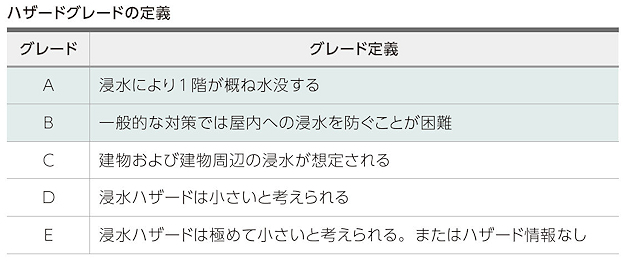
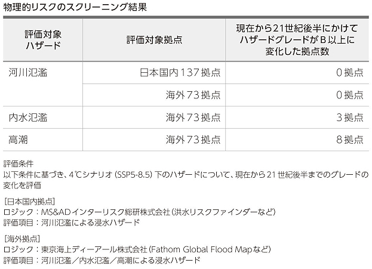
トヨタは、物理的リスクの最小化に向けて、工場新設時のサイト選定における水リスクの考慮、リスク評価の結果に基づいた対策の推進、災害経験を踏まえた事業継続計画（BCP＊1）の継続的な見直しを行っているほか、サプライチェーンを含めた事業継続マネジメント（BCM＊2）にかかる取り組みを行っています。
＊１ Business Continuity Plan：災害などの緊急事態が発生したときに、企業が損害を最小限に抑え、事業の継続や復旧を図るための計画
＊２ Business Continuity Management：BCPで定めた各対策計画が実行可能なものとして機能するよう定める運用管理の仕組み
財務影響評価
特定したリスクと機会から、財務影響が発生する因果関係を解析しています。また、特定したリスクと機会におけるモビリティコンセプトなどの経営上のテーマやサステナビリティの重点取り組みテーマとの関連性を評価したうえで重要性を確認するとともに、それぞれのシナリオにおける前提を考慮し、特に重要性の高いリスクと機会の財務影響を評価しています。
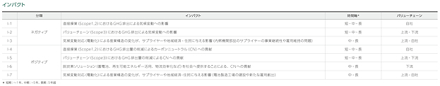
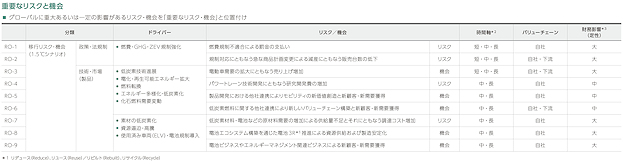
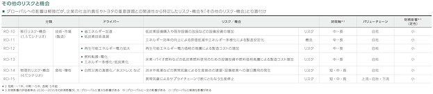
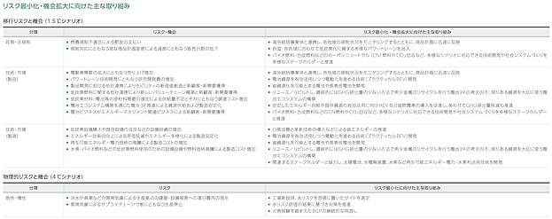
掲載の画像については、2026年６月に以下ウェブサイトに掲載予定の当社「サステナビリティデータブック」をご参照ください。https://global.toyota/jp/sustainability/report/sdb/
c.レジリエンス分析
重要なIROに対応するための戦略とビジネスモデル
前述の評価プロセスにより、特定した重要なIROはトヨタにとって重要な影響を与えると認識しました。マルチパスウェイ戦略の下、移行計画などに当該IROへの対応を織り込み、対応を実施するための経営資源を確保しています。
移行計画
トヨタはパリ協定に先立つ2015年10月にトヨタ環境チャレンジ2050を公表しています。気候変動に関する長期目標として、ライフサイクルCO2ゼロチャレンジ、新車CO2ゼロチャレンジ、工場CO2ゼロチャレンジを掲げました。また、中期目標として、第８次トヨタ環境取組プラン（2030年目標）の中で、排出スコープ個別の削減目標を設定。Scope１,２ およびScope３カテゴリー11の削減目標は、SBTi*１ 認定を取得しています。
トヨタは、パリ協定を支持し、これらのGHG削減目標の下、マルチパスウェイ戦略を推進することにより、2050年カーボンニュートラル（CN）に全力でチャレンジしています。また、目標に向けた削減取り組みなどをまとめた移行計画を策定しています。これは、トヨタが気候変動関連のリスクと機会に対応するためにも重要な計画として位置付けられており、販売計画や中期経営計画などの経営計画にも組み込まれています。
移行計画は、主要な排出スコープを中心に、トヨタが重要と考えている社会のCNに貢献する取り組みも含めて構成されています。排出スコープごとに、主要な削減取り組みを削減レバーとして設定しており、これらのレバーの下で具体的な削減施策を実施するとともに、取り組み進捗を管理しています。移行計画の策定においては、シナリオ分析で参照した1.5℃シナリオの前提条件を考慮しています。
移行計画の詳細については、2026年６月に以下ウェブサイトに掲載予定の当社「サステナビリティデータブック」をご参照ください。
https://global.toyota/jp/sustainability/report/sdb/
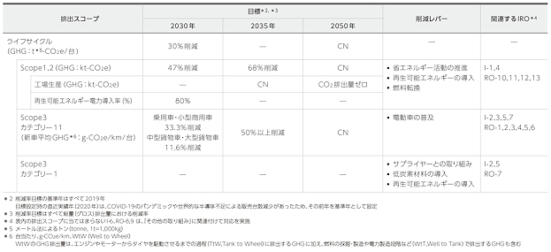
＊１ Science Based Targets initiative：CDP、国連グローバル・コンパクト、World Resources Institute（WRI）、世界自然保護基金（WWF）によって設立されたイニシアチブ
レジリエンス分析
シナリオ分析によりマルチパスウェイ戦略のレジリエンスを評価しています。
1.5 ℃シナリオ分析結果
シナリオ分析を通じて、パリ協定に整合する1.5℃実現に向けた経路はさまざまに存在し、それぞれに実現のための条件や社会的な課題が存在することを確認しました。世界に市場を持つトヨタは、各国・各地域で異なる市場とステークホルダーの要請に応えることが必要です。よって、単一の施策や技術に特化および限定することなく、さまざまな経路や不確実性に対応可能な、多様な施策や技術の提供、すなわちマルチパスウェイ戦略が有効と再認識しました。
４℃シナリオ分析結果
シナリオ分析を通じて、国内外の事業拠点の一部において河川氾濫リスク／内水氾濫リスク／高潮リスクが特定されましたが、影響は軽微であることを確認しました。また、災害訓練などにより、PDCAを回して改善を行うことで事業継続計画（BCP）の実効性が高まり、災害発生時の復旧速度が上がっていることを確認しました。この活動を事業継続マネジメント（BCM）と位置付け、従業員・家族、トヨタグループ・サプライヤー、トヨタが三位一体となった活動として推進しています。
レジリエンスの考察
トヨタは「町いちばんの会社を目指そう」との理念に基づいて各国・各地域発展の助成につなげるべく、さまざまな経済・エネルギー事情に即しつつ、お客様に受け入れていただけるモビリティの選択肢の提供を進めています。また、GHG排出量の削減に向けては、既存のインフラやアセットも活用しつつ取り組んでいます。こうしたマルチパスウェイ戦略は、あらゆるシナリオが描く世界観においてレジリエンスが高いことが判明しました。
IPCCの評価報告書などでも記載されているとおり、パリ協定で掲げられている1.5℃実現にはさまざまな経路があり、地域のエネルギー事情や政策によっても変動する可能性があります。その実現にはさまざまな産業が関与するため、CN燃料の普及を含むパートナー連携が不可欠と考えています。トヨタはパリ協定を支持し、それに沿って行動しています。パリ協定との整合は重要であり、パートナーと共に、モビリティコンセプトに基づく車両開発や社会インフラづくりを推進し、2050年CN実現に向けて全力でチャレンジしています。
今後もシナリオ分析に基づき、内外の状況の変化に応じてリスクと機会を見直し、その対応を戦略に織り込むことで、さらなるレジリエンス向上を目指します。
③リスク管理
全社的なリスク管理と気候変動関連のリスク管理プロセスとの連携
トヨタは、気候変動に関するリスクと機会を重要な経営課題と認識し、TCFD提言を踏まえ、シナリオ分析によりリスクと機会を特定し、事業活動のレジリエンスを評価しています。ISO規格やCOSO枠組みを基盤とする全社的なリスク管理フレームワークであるToyota Global Risk Management Standard（TGRS）なども活用して、グローバルな事業活動に関わるすべてのリスクを特定、必要に応じて全社横断でタスクフォースを設置し、対策の進捗を確認しながらリスクマネジメントを推進しています。
リスクは影響度と脆弱性の２つの観点で評価し、時間軸を具体的に想定することで、事業に対する実質的な財務・戦略的影響を明確化しています。
影響度の観点では、財務／評判／法規制違反／事業継続の各要素について５段階で評価しています。また、脆弱性の観点では、対策の現状と発生可能性の２つの指標で評価しています。上記の観点で評価された地域別、機能別（生産／販売など）、製品別の重要リスクは、リスクオーナーが設定され、各部門の本部長や社内カンパニープレジデントが活動を統括し、その下位では部長が部署の活動を統括、対応策の実行およびモニタリングを実施しています。
気候変動関連のリスクと機会は、上記のTGRSに加え、関係役員や担当部署による審議を行い、対応状況のモニタリングや見直しを実施しています。環境問題から生じる様々なリスクと機会の把握に努めるほか、トヨタ環境チャレンジ2050などの戦略の妥当性を常に確認し、取り組みを推進と競争力強化を図っています。
リスクへの対策として、車両・生産販売事業・サプライチェーンにおける現在と将来のGHG排出量を算定し、関連する科学的根拠に基づいた排出削減経路に照らし合わせて評価しています。また、迅速な対応が必要となる重要なリスクと機会については、ガバナンス・リスク・コンプライアンス会議にて審議の上、取締役会へ適切に付議し、対応を決定しています。
④指標と目標
中長期目標の体系
トヨタは企業ミッションである人類と地球の共生、「幸せの量産」を実現するために、環境分野のビジョン・目標を体系的に策定しています。カーボンニュートラル（CN）、サーキュラーエコノミー（CE）、ネイチャーポジティブ（NP）の３分野を柱として、長期ビジョンであるトヨタ環境チャレンジ2050、中期目標としては、第８次トヨタ環境取組プラン（2030 年目標）などを社内外に共有し、連携して取り組みを推進しています。
中長期の目標を含む、移行計画については「第２ 事業の状況 ２ サステナビリティに関する考え方及び取組（５）気候変動関連課題への対応（TCFDに基づく気候関連財務情報開示）②戦略 c.レジリエンス分析」を参照ください。
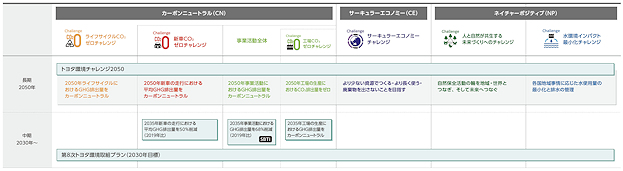
第７次トヨタ環境取組プラン（2025年目標）レビュー
トヨタ環境チャレンジ2050の実現に向けて、５カ年実行計画である第７次トヨタ環境取組プラン（2025年目標）の全項目で取り組みを推進しました。
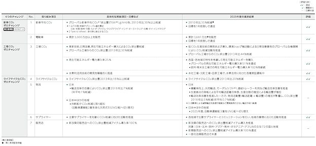
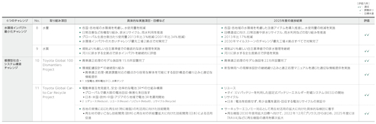
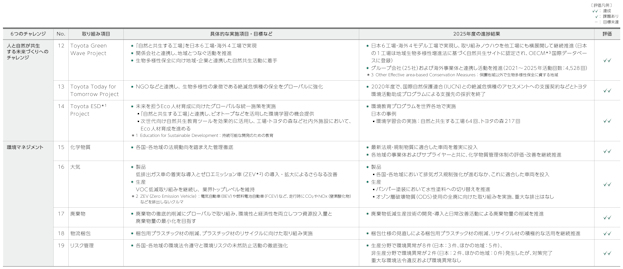
掲載の画像については、2026年６月に以下ウェブサイトに掲載予定の当社「サステナビリティデータブック」をご参照ください。https://global.toyota/jp/sustainability/report/sdb/
第８次トヨタ環境取組プラン（2030年目標）
環境チャレンジ2050の実現に向けて、新たな５カ年実行計画である第８次トヨタ環境取組プラン（2030年目標）を策定し、2026年４月より取り組みを開始しています。従前からトヨタが重視する、カーボンニュートラル（CN）、サーキュラーエコノミー（CE）、ネイチャーポジティブ（NP）の３分野を柱に、17項目で目標を設定しました。10の国・地域（北米、欧州、中国、アジア、インド、南米、南アフリカ、オーストラリア、ニュージーランド、韓国）においても、これに沿った国・地域別の2030年目標を設定しています。
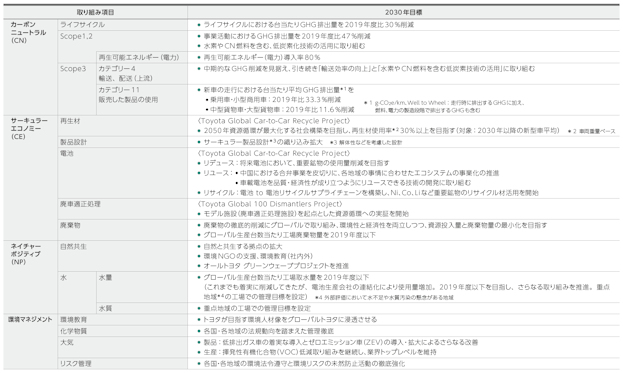
掲載の画像については、2026年６月に以下ウェブサイトに掲載予定の当社「サステナビリティデータブック」をご参照ください。https://global.toyota/jp/sustainability/report/sdb/
以下において、トヨタの事業その他のリスクについて、投資家の判断に重要な影響を及ぼす可能性のある事項を記載しています。ただし、以下はトヨタに関するすべてのリスクを網羅したものではなく、記載されたリスク以外のリスクも存在します。かかるリスク要因のいずれによっても、投資家の判断に影響を及ぼす可能性があります。
本項においては、将来に関する事項が含まれていますが、当該事項は有価証券報告書提出日（2026年６月10日）現在において判断したものです。
世界の自動車市場では激しい競争が繰り広げられています。トヨタは、ビジネスを展開している各々の地域で、自動車メーカーとの競争に直面しています。近年、自動車市場における競争はさらに激化しており、厳しい状況が続いています。また、世界の自動車産業におけるCASEなどの技術革新が進むことによって、競争は今後より一層激化する可能性があり、業界再編につながる可能性もあります。競争に影響を与える要因としては、製品の品質・機能、安全性、信頼性、燃費、革新性、開発に要する期間、価格、カスタマー・サービス、自動車金融の利用条件、各国の税制優遇措置等の点が挙げられます。競争力を維持することは、トヨタの既存および新規市場における今後の成功、販売シェアにおいて最も重要です。トヨタは、エンジン車から電動車へのお客様のニーズの変化など、昨今の自動車市場の急激な変化に的確に対応し、今後も競争力の維持強化に向けた様々な取り組みを進めていきますが、将来優位に競争することができないリスクがあります。競争が激化した場合、自動車の販売台数の減少や販売価格の低下などが起きる可能性があり、それによりトヨタの財政状態、経営成績およびキャッシュ・フローが悪影響を受けるリスクがあります。
トヨタが参入している各市場では、今までも需要が変動してきました。各市場の状況によって、自動車の販売は左右されます。トヨタの販売は、世界各国の市場に依存しており、各市場の景気動向はトヨタにとって特に重要です。このような需要の変化は現在でも続いており、この状況が今後どのように推移するかは不透明です。今後トヨタの想定を超えて需要の変化が継続または悪化した場合、トヨタの財政状態、経営成績およびキャッシュ・フローが悪影響を受ける可能性があります。また、需要は、販売・金融インセンティブ、原材料・部品等の価格、燃料価格、政府の規制（関税、輸入規制、その他の租税を含む）など、自動車の価格および自動車の購入・維持費用に直接関わる要因により、影響を受ける場合があります。需要が変動した場合、自動車の販売台数の減少や販売価格の低下などが起きる可能性があり、それによりトヨタの財政状態、経営成績およびキャッシュ・フローが悪影響を受けるリスクがあります。
③お客様のニーズに速やかに対応した、革新的で価格競争力のある新商品を投入する能力
製品の開発期間を短縮し、魅力あふれる新型車でお客様にご満足いただくことは、自動車メーカーにとっては成功のカギとなります。特に、品質、安全性、信頼性、サステナビリティにおいて、お客様にご満足いただくことは非常に重要です。世界経済の変化や技術革新に伴い、自動車市場の構造が急激に変化している現在、お客様の価値観とニーズの急速な変化に対応した新型車および新機能を適時・適切にかつ魅力ある価格で投入することは、トヨタの成功にとってこれまで以上に重要であり、技術・商品開発から生産にいたる、トヨタの事業の様々なプロセスにおいて、そのための取り組みを進めています。しかし、トヨタが、品質、安全性、信頼性、スタイル、サステナビリティ、その他の性能に関するお客様の価値観とニーズを適時・適切にかつ十分にとらえることができない可能性があります。また、トヨタがお客様の価値観とニーズをとらえることができたとしても、その有する技術、知的財産、原材料や部品の調達、原価低減能力を含む製造能力またはその他生産性に関する状況により、価格競争力のある新製品を適時・適切に開発・製造できない可能性があります。また、トヨタが計画どおりに新製品の投入や設備投資を実施し、製造能力を維持・向上できない可能性もあります。お客様のニーズに対応する製品を開発・提供できない場合、販売シェアの縮小ならびに営業収益と利益率の低下を引き起こすリスクがあります。
④効果的な販売・流通を実施する能力
トヨタの自動車販売の成功は、お客様のご要望を満たす流通網と販売手法に基づき効果的な販売・流通を実施する能力に依存します。トヨタはその参入している各主要市場につきお客様の価値観または地政学的な緊張関係や規制環境において、変化に効果的に対応した流通網と販売手法を展開できない場合は、営業収益および販売シェアが減少するリスクがあります。
⑤ブランド・イメージの維持・発展
競争の激しい自動車業界において、ブランド・イメージを維持し発展させることは非常に重要です。ブランド・イメージを維持し発展させるためには、トヨタグループおよび仕入先が法令遵守を徹底し、お客様の価値観やニーズに対応した安全で高品質の製品を提供すること、また、ステークホルダーの皆様への迅速かつ適切な情報発信を通じ、ステークホルダーの皆様の信頼をさらに高めていくことが重要です。また、企業としてサステナビリティに貢献することの重要性も高まっています。
しかし、トヨタグループや仕入先があらゆる場面において、それを徹底できるとは限りません。さらに、トヨタまたは仕入先がサステナビリティに貢献しない、または気候変動やサプライチェーンにおける人権保護など、特定のサステナビリティに関する目標または目的を達成できない場合、トヨタのブランド・イメージが低下する可能性があります。トヨタのブランド・イメージを効果的に維持し発展させることができなかった場合、営業収益と利益率の低下を引き起こすリスクがあります。
⑥仕入先への部品・原材料供給の依存
トヨタは、部品や原材料などの調達部品を世界中の複数の競合する仕入先から調達する方針を取っていますが、調達部品によっては他の仕入先への代替が難しいものもあり、特定の仕入先に依存しているものがあります。また、かかる特定の仕入先からの調達ができない場合、当該部品等の調達がより困難となり、生産面への影響を受ける可能性があります。さらに、トヨタが直接の取引先である一次仕入先を分散していたとしても、一次仕入先が部品調達を二次以降の特定の仕入先に依存していた場合、同様に部品の供給を受けられないリスクもあります。仕入先の数に関わらず、トヨタが調達部品を継続的にタイムリーかつ低コストで調達できるかどうかは、多くの要因の影響を受けますが、それら要因にはトヨタがコントロールできないものも含まれています。それらの要因の中には、仕入先が継続的に調達部品を調達し供給できるか、またトヨタが、仕入先から調達部品を競争力のある価格で供給を受けられるか等が含まれます。このような能力に悪影響を与える可能性のある状況には、地政学的な緊張や、経済制裁などの政府の行動が含まれます。特定の仕入先を失う、またはそれら仕入先から調達部品をタイムリーもしくは低コストで調達できない場合、トヨタの生産に遅延や休止またはコストの増加を引き起こす可能性があり、トヨタの財政状態、経営成績およびキャッシュ・フローに悪影響が及ぶ可能性があります。
⑦金融サービスにおける競争の激化
世界の金融サービス業界では激しい競争が繰り広げられています。自動車金融の競争激化は、利益率の減少を引き起こす可能性があります。この他トヨタの金融事業に影響を与える要因には、トヨタ車の販売台数の減少、中古車の価格低下による残存価値リスクの増加、貸倒率の増加および資金調達費用の増加が挙げられます。
⑧デジタル情報技術および情報セキュリティへの依存
トヨタは、機密データを含む電子情報を処理・送信・蓄積するため、または製造・研究開発・サプライチェーン管理・販売・会計を含む様々なビジネスプロセスや活動を管理・サポートするために、第三者によって管理されているものも含め、様々な情報技術ネットワークやシステムを利用しています。さらに、トヨタの製品にも情報サービス機能や運転支援機能など様々なデジタル情報技術が利用されています。これらのデジタル情報技術ネットワークやシステムは、安全対策が施されているものの、ハッカーによる不正アクセスやコンピュータウィルスによる攻撃、トヨタが利用するネットワークおよびシステムにアクセスできる者による不正使用・誤用、開発ベンダー・クラウド業者など関係取引先からのサービスの停止、電力供給不足を含むインフラの障害、天災などによって被害や妨害を受ける、または停止する可能性があります。特にサイバー攻撃や他の不正行為は苛烈さ、巧妙さ、頻度において脅威を増しており、そのような攻撃の標的であり続ける恐れがあります。このような事態が起きた場合、重要な業務の中断や、機密データの漏洩、トヨタ製品の情報サービス機能・運転支援機能などへの悪影響のほか、法的請求、訴訟、賠償責任、罰金の支払い義務などが発生する可能性もあります。その結果、トヨタのブランド・イメージや、トヨタの財政状態、経営成績およびキャッシュ・フローに悪影響を及ぼす可能性があります。さらに、トヨタの取引先やビジネスパートナーに対する同様の攻撃は、トヨタにも同様の悪影響を与える可能性があります。
気候変動リスクは、日本および世界で、社会面、規制を含む政治面での関心が高まっています。これらのリスクには、気候変動による物理的リスクや低炭素経済への移行リスクが含まれます。
気候変動の物理的リスクには、台風、洪水、竜巻、干ばつ、山火事など突発的な気象変化に起因する影響と、気温上昇、海面上昇など、長期的な気象変化による影響の両方が含まれます。トヨタはBusiness Continuity Plan（BCP）を策定していますが、異常気象による大規模災害に加え、熱波等が増加・激甚化することで熱中症のリスクが増加し、また、干ばつや渇水による水不足も予想されます。これらは、トヨタならびに仕入先および取引先の従業員、施設およびその他の資産に損害を与える可能性があり、トヨタの生産、販売またはその他の事業運営に悪影響を及ぼす可能性があります。大規模な災害等はまた、お客様の財政状態に悪影響を及ぼし、トヨタの製品およびサービスの需要に悪影響を与える可能性があります。
低炭素経済への移行リスクとは、気候関連のリスクを軽減するための規制、技術、および市場の変化やその対応に伴うリスクです。例えば、トヨタは、気候変動に関する法律、規制、政策の変更、気候変動に対処するための技術革新、市場構造の変化をとらえた自動車産業への新規参入者などの要因により、自動車に対するお客様のニーズが変化するリスクにさらされています。お客様のニーズの変化は、トヨタが部品や原材料などの調達部品を継続的かつ競争力のある価格で調達するために、新たな供給網の確立や既存の供給網の強化が必要になるなど、付随的なリスクや課題をもたらす可能性があります。トヨタは、そのようなリスクの顕在化の結果として、またはリスク軽減やリスク対応の努力の結果として、多額の費用および支出を負担する可能性があります。また、お客様のニーズに対応する製品を開発・提供できない場合、販売シェアの縮小ならびに営業収益と利益率の低下を引き起こすリスクがあります。
トヨタは、トヨタの事業やビジネスパートナーに関する気候変動関連事項の開示を公表しています。この開示には、トヨタの予想に基づき、将来の見通しに関する記述が含まれており、結果的にこれらが実現できない可能性があります。また、気候変動に関する取り組みは意図した結果をもたらさない可能性があり、目標の達成時期やコスト、達成能力に関する予測は、リスクと不確実性を伴います。その結果、気候変動関連の目標が達成できない恐れがあります。特に、中長期にわたるトヨタの気候変動関連の目標の達成には、多大なリソーセスと投資、ならびにコンプライアンス、リスク管理システム、内部統制およびその他の内部手続のさらなる改善が必要です。また、トヨタがコントロールできない環境・エネルギー規制、政策の変更、技術革新、顧客や競合他社の行動等にも影響を受けます。気候変動関連の目標を達成できない、または達成できないとみなされた場合、トヨタのブランド・イメージ、財務状況、経営成績に悪影響を及ぼす可能性があります。詳細については、「２ サステナビリティに関する考え方及び取組（５）気候変動関連課題への対応（TCFDに基づく気候関連財務情報開示)」を参照ください。
事業環境の急激な変化やモビリティカンパニーへの変革に向けた取り組みを進めるにあたり、優秀で多様な人材を確保し、育成し続けることが重要です。しかしながら、そのような人材の獲得競争は激しく、トヨタが高い専門性や豊富な経験を持つ多様な人材を計画どおりに採用、定着化できない場合、または成長に必要な機会、教育、リソースを提供できない場合、競争力低下につながり、トヨタの財政状態、経営成績およびキャッシュ・フローに悪影響を与える可能性があります。
①為替および金利変動の影響
トヨタの収益は、外国為替相場の変動に影響を受け、主として日本円、米ドル、ユーロ、ならびに豪ドル、加ドルおよび英国ポンドの価格変動によって影響を受けます。トヨタの連結財務諸表は、日本円で表示されているため、換算リスクという形で為替変動の影響を受けます。また、為替相場の変動は、外国通貨で販売する製品および調達する材料に、取引リスクという形で影響を与える可能性があります。特に、米ドルに対する円高の進行は、トヨタの経営成績に悪影響を与える可能性があります。
為替相場および金利の変動リスクを軽減するために、現地生産を行い、先物為替予約取引や金利スワップ取引を含むデリバティブ金融商品を利用していますが、依然として為替相場と金利の変動は、トヨタの財政状態、経営成績およびキャッシュ・フローに悪影響を与える可能性があります。為替変動の影響および為替リスクの管理に関しては、「４ 経営者による財政状態、経営成績及びキャッシュ・フローの状況の分析（２）経営者の視点による経営成績等の状況に関する分析・検討内容 ①概観 c.為替の変動」および連結財務諸表注記20を参照ください。
②原材料価格の上昇
鉄鋼、貴金属、非鉄金属（アルミ等）、樹脂関連部品など、トヨタおよびトヨタの仕入先が製造に使用する原材料価格の上昇は、部品代や製造コストの上昇につながり、これらのコストを製品の販売価格に十分に転嫁できない場合、トヨタの将来の収益性に悪影響を与える可能性があります。
③金融市場の低迷
世界経済が急激に悪化した場合、多くの金融機関や投資家は、自らの財務体力に見合った水準で金融市場に資金を供給することが難しい状況に陥る可能性があります。その結果、企業がその信用力に見合った条件で資金調達をすることが困難になる可能性があります。必要に応じて資金を適切な条件で調達できない場合、トヨタの財政状態、経営成績およびキャッシュ・フローが悪影響を受ける可能性があります。
①自動車産業に適用される法律、規制および行政措置
世界の自動車産業は、様々な法律や規制の適用を受けています。トヨタは、法律や規制、行政措置、またはそれらへの対応の結果として、多額の費用を負担しており、今後も発生することが予想されます。さらに、新しい法律や規制の適用、または既存の法律や規制の変更によっても、将来的に追加的な費用が発生する可能性があります。トヨタが、法律、規制、行政措置に関連して多額の費用を負担する場合、トヨタの財政状態、経営成績およびキャッシュ・フロー状況並びにそれらの見通しに重大な影響を及ぼす可能性があります。また、これらの法律、規制および行政措置は、トヨタの事業を制限するものとなる可能性があり、その場合、トヨタの財政状態、経営成績およびキャッシュ・フローの状況並びにそれらの見通しに重大な悪影響を及ぼす可能性があります。
例えば、トヨタは自動車の安全性や排ガス、燃費、騒音、公害をはじめとする環境問題などに関する様々な法律と政府の規制の適用を受けています。特に、安全面では、法律や政府の規制に適合しない、またはその恐れのある自動車は、リコール等の市場処置の実施が求められます。さらに、トヨタはお客様の安心感の観点から、法律や政府の規制への適合性に関わらず、自主的に販売停止やリコール等の市場処置を実施する可能性もあります。トヨタが市場に投入した車両にリコール等の市場処置が必要となった場合（リコール等に関係する部品はトヨタが第三者から調達したものも含む）、製品のリコール等にかかる費用を含めた様々な費用が発生する可能性があります。また、多くの政府は、価格管理規制や為替管理規制を制定しています。さらに、規制を遵守できなかった場合、法的手続、リコール、改善措置の交渉、罰金、是正命令、政府承認の取り消しやその他の政府制裁の賦課、製品提供の制限、補償金の支払い等の不利益をもたらす可能性があります。
同様に、多くの政府は、関税やその他の貿易障壁、税金、課徴金を課したり、価格や為替の規制を制定しています。例えば、2025年には、自動車産業に特化した関税を含む対米輸出関税の大幅な引き上げが、米国の他の貿易政策の変更とともに発表され、それに対応して他の国々も報復関税や貿易政策の変更を発表し、現在も高い関税率が継続しています。このような関税や貿易政策の将来の変更、または他の関税や貿易関連措置の時期、実施期間、および範囲を予測することは困難であり、最近発表された関税や貿易関連措置は、当社製品のコストを上昇させ、将来の需要の鈍化を引き起こす可能性があります。また、当社のサプライチェーンや物流ネットワークへの影響は、当社の生産や販売に悪影響を及ぼす可能性があります。上記の影響は主として米国におけるものでありますが、トヨタの事業活動への影響は米国に限定されるものではありません。当該状況が長期間継続した場合、トヨタのみならず、自動車産業全体および関連業界の他の企業にも悪影響を及ぼす可能性があり、その結果、トヨタの財政状態、経営成績およびキャッシュ・フローの状況並びにそれらの見通しに悪影響を及ぼす可能性があります。さらに、当該関税や貿易関連措置の影響を緩和するための取り組みは、トヨタのコスト負担を増加させ、経営上注意を要するリスクとなる可能性があります。
②法的手続
トヨタは、製造物責任、知的所有権の侵害等、様々な法的手続の当事者となる可能性があります。また、株主との間で法的手続の当事者となったり、行政手続または当局の調査の対象となる可能性もあります。現在トヨタは、行政手続および当局の調査を含む、複数の係属中の法的手続の当事者となっています。トヨタが当事者となる法的手続で不利な判断がなされた場合、トヨタの評判、ブランド・イメージ、財政状態、経営成績およびキャッシュ・フローに悪影響が及ぶリスクがあります。政府の規制等の法的手続の状況については連結財務諸表注記32を参照ください。
③自然災害、感染症、政治動乱、経済の不安定な局面、燃料供給の不足、インフラの障害、戦争、テロまたはストライキの発生
トヨタは、全世界で事業を展開することに関連して、様々なイベントリスクにさらされています。これらのリスクとは、自然災害、感染症の発生・蔓延、政治・経済の不安定な局面、燃料供給の不足、天災などによる電力・交通機能・ガス・水道・通信等のインフラの障害、戦争、テロ、ストライキ、操業の中断などが挙げられます。トヨタが製品を製造するための材料・部品・資材などを調達し、またはトヨタの製品が製造・流通・販売される主な市場において、これらの事態が生じた場合、トヨタの事業運営に障害または遅延をきたす可能性があります。トヨタの事業運営において、重大または長期間の障害ならびに遅延が発生した場合、トヨタの財政状態、経営成績およびキャッシュ・フローに悪影響が及ぶリスクがあります。